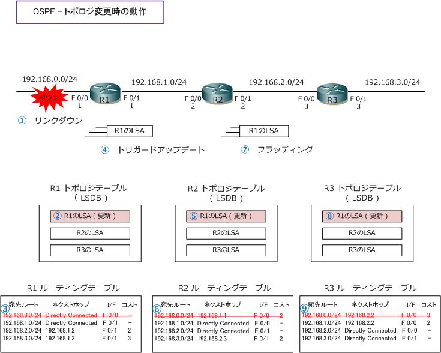

OSPF - Topology Change
OSPF - トポロジ変更の動作
OSPFではネットワークトポロジに変化があった場合（ネットワークのダウン、ネットワークの追加等）には 影響があった差分だけをトリガードアップデートします。リンク状態の変化を検出したOSPFルータはLSAを 更新してネイバールータへ通知します。下図では、R1のF0/0リンクがダウンした場合の動作を示しています。

| 項番 | 説明 |
|---|---|
| ① | R1 のFa0/0のリンクダウン ( 192.168.0.0/24のダウン ) が発生。 |
| ② | リンクダウンを検出したR1 は、LSDBにある自身のLSAを更新。 |
| ③ | SPFアルゴリズムによりSPFツリーを更新し、ルーティングテーブルを更新（リンクダウンした経路の削除） |
| ④ | R1 は更新したLSAをトリガードアップデートにより、隣接ルータへ通知。 |
| ⑤ | R2は、受信したLSAが新しい情報だと確認できると、LSDBを更新する。 |
⑤以降は、SPFツリーの更新 ⇒ ルーティングテーブルの更新 ⇒ フラッディングという同じ処理を行います。 この一連処理は、同じエリア内の全てのOSPFルータで行われていき、最終的には同じLSDBが保持されます。
OSPFの特徴
| 項番 | OSPFの特徴 | 説明 |
|---|---|---|
| ① | マルチベンダーのサポート | RIP同様にIETF標準化プロトコルのため、異メーカのルータ間でもOSPF通信が可能。 |
| ② | リンクステート型プロトコル | リンクステート型ルーティングプロトコル。 |
| ③ | 高速なコンバージェンス | トポロジ変更時に高速なコンバージェンスを実現。 |
| ④ | メトリックにコストを使用 | リンクの帯域幅を基に算出するコストをメトリックとして使用。 |
| ⑤ | VLSMのサポート | 通知する経路情報にサブネットマスクを含められるクラスレスルーティングプロトコル。 |
| ⑥ | 手動経路集約のサポート | エリア境界ルータ（ABR）やAS境界ルータ（ASBR）上で、手動で経路集約を行える。 |
| ⑦ | エリアによる階層設計 | LSAを交換する範囲を示す論理グループであるエリアの概念に基づき階層設計が可能。 |
| ⑧ | 差分アップデート | 定期的なアップデートはせずトポロジ変更時に差分のみマルチキャストでアップデート。 |